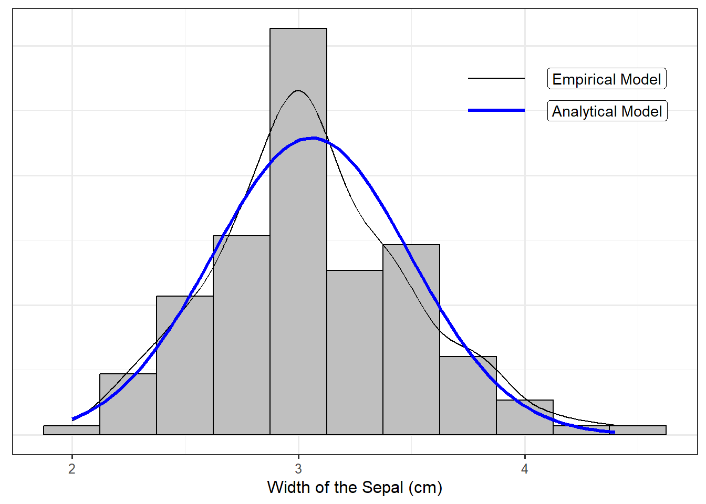

18 Conditions on the Error Term of a Regression Model
In the previous chapter we developed a general model for the data generating process of a quantitative response as a linear function of a quantitative predictor:
\[(\text{Response})_i = \beta_0 + \beta_1 (\text{Predictor})_{i} + \varepsilon_i.\]
We also discussed a common method for estimating the parameters of this model from a sample — the method of least squares. However, if we are to construct a model for the sampling distribution of these estimates we must add some structure to the stochastic component \(\varepsilon\) in the model. In this chapter, we focus on the most common conditions we might impose and how those conditions impact the model for the sampling and null distributions (and therefore the computation of a confidence interval or p-value).
18.1 Correctly Specified Model
The first condition we consider is the most important. It states that for every value of the predictor, the average error is 0.
Mean-0 Condition
The “mean-0 condition” states that for every value of the predictor, the average error is 0.
In practice, this condition implies that the deterministic portion of the model for the data generating process that we have posited is accurate; that is, it implies the form of the model is appropriate. For Equation 17.3, this condition states that the response is linearly related to the predictor.
There is a subtlety to this condition; the phrase “for every value of the predictor” is crucial. Without this phrase, the condition would simply state that the model may overestimate for some values of the predictor, but that is balanced out by underestimating for other values of the predictor. That is, the model for the deterministic portion can be wrong everywhere, but those “wrongs” cancel each other out (consider the orange line again in Figure 17.2). Instead, we want the deterministic portion of the model to be correct everywhere, for all values of the predictor (consider the blue line again in Figure 17.2).
There are two reasons we say that this is the most important condition:
- If this condition is violated, it says your model for the data generating process is fundamentally incorrect in its form. Generally, this is the result of ignoring some curvature in the relationship between the response and predictor or some important additional feature. If the functional form of the model for the deterministic portion is incorrect, you have to begin your modeling process over again.
- This condition allows us to interpret the parameters of the model.
That is, instead of \(\beta_0\) and \(\beta_1\) representing solely the intercept and slope, we can interpret these parameters in the context of the research objective.
18.1.1 Interpreting the Parameters
In Chapter 10, we posited a model of the form
\[(\text{Response})_i = \mu + \varepsilon_i\]
where we said that \(\mu\) represented the average response. When we impose the mean-0 condition in Equation 17.3, we are stating that given a value of the predictor, the average response is given by
\[\beta_0 + \beta_1 (\text{Predictor}).\]
That is, instead of considering the overall average response, we are acknowledging that the average response may depend on the value of the predictor. The mean-0 condition essentially tells us that the deterministic portion of the model for the data generating process represents the average response for a specified value of the predictor.
Big Idea
The deterministic portion of a simple linear regression model specifies the average value of the response given the value of the predictor.
As an example, consider our model for the Seismic Activity Case Study developed in Chapter 17, which considered the bracketed duration at a location as a function of the magnitude of the earthquake:
\[(\text{Bracketed Duration})_i = \beta_0 + \beta_1(\text{Magnitude})_i + \varepsilon_i.\]
If we are willing to assume that for earthquakes of any magnitude, the average error in the bracketed duration is 0 (the mean-0 condition), then earthquakes with a 5.0 magnitude have an average bracketed duration of
\[\beta_0 + \beta_1(5).\]
Similarly, earthquakes with a 6.0 magnitude have an average bracketed duration of
\[\beta_0 + \beta_1(6).\]
As we have mentioned, the deterministic portion of the model does not specify the exact response for any individual unit; the deterministic portion specifies the trend. We are now able to say that the “trend” we are modeling is the average response. Further, we can estimate this average response by plugging in the least squares estimates \(\widehat{\beta}_0\) and \(\widehat{\beta}_1\). Specifically, using the method of least squares, the line of best fit was estimated as
\[(\text{Bracketed Duration}) = -19.19 + 4.48 (\text{Magnitude})\]
Therefore, we estimate the average bracketed duration for locations with 5.0 magnitude earthquakes to be 3.22 seconds, and we estimate the average bracketed duration for locations with 6.0 magnitude earthquakes to be 7.71 seconds. While we do not expect every location which has a 5.0 magnitude earthquake to have a bracketed duration of 3.22 seconds, we expect the bracketed duration to vary about this length of time. This is huge; it says that when we use a regression model to predict a response, we are actually predicting the average response. And, it provides a direct interpretation of the parameters themselves.
Let’s begin with the intercept term, \(\beta_0\). Notice that in our model above, if we try to predict the bracketed duration for a location with an earthquake which has a magnitude of 0, then our model returns \(\beta_0\). In fact, for any regression model, the intercept \(\beta_0\) is the value of the deterministic portion of the model when the predictor in the model is set to 0, and we know that deterministic portion is the average response.
Interpretation of the Intercept
Consider a regression model of the form Equation 17.3; if we impose the mean-0 condition, the intercept \(\beta_0\) represents the average response when the predictor is equal to 0. Note that the resulting estimate may not be feasible; indeed, considering a predictor of 0 may not even make sense in every context (e.g., an earthquake with a magnitude of 0 is not an earthquake).
For our particular example, our intercept is estimated to be -19.19; this estimates the average bracketed duration for an earthquake with a magnitude of 0. An earthquake with no magnitude is not an earthquake at all; and, if there is no earthquake, we would not expect the ground to undergo any duration of extreme motion. Further, even if a magnitude of 0 made sense, a negative duration does not.
When predictions for a model do not make logical sense, it is often the result of extrapolation. We do not have any data on the bracketed duration for locations which experienced an earthquake with a magnitude less than 4.5. Therefore, we are using a model to predict for a region over which the model was not constructed to operate. This is a lot like using a screw driver to hammer a nail — we are using a tool to accomplish a task for which it was not designed. We should therefore not be surprised when the tool fails. The primary reason extrapolation is dangerous is that without data in a particular region, we have nothing supporting that the posited model for the data generating process will continue to hold in that region. We have illustrated this when discussing the intercept, but extrapolation can occur in any region for which there is no data. For this reason, unless you have strong scientific justification for why a model will hold over all values of the predictor, extrapolation should be avoided
Definition 18.1 (Extrapolation) Using a model to predict outside of the region for which data is available.
With an interpretation of the intercept \(\beta_0\), we now turn our attention to the slope \(\beta_1\). Notice that based on our estimates above, the average bracketed duration is 4.48 seconds longer for those locations which experience a 6.0 magnitude earthquake compared to those which experience a 5.0 magnitude earthquake, and this difference is the value of the estimated slope. This is not a coincidence; 4.48 seconds is the change in the average bracketed duration that is associated with a 1-unit increase in the magnitude of an earthquake. The slope is essentially comparing the average response for two values of the predictor that differ by 1 unit.
Interpretation of the Slope
Consider a regression model of the form Equation 17.3; if we impose the mean-0 condition, the slope \(\beta_1\) represents the average change in the response associated with a 1 unit increase in the predictor.
18.1.2 Embedding our Question in a Statistical Framework
Our first fundamental idea centers on the idea that the majority of research questions can be framed in terms of a parameter within the population. This seemed somewhat intuitive when the parameter was simply the mean response. With parameters which are the slope and intercept of a line, this seems less clear. However, the mean-0 condition provides interpretations of the parameters, and this in turn ensures that our questions of interest can be framed in terms of those parameters. Consider the following question:
On average, are changes in the magnitude of an earthquake associated with changes in the bracketed duration observed?
Let’s consider how we might write this in terms of a null and alternative hypotheses. The mean-0 condition states that our form for the deterministic portion of the model is correct. That is, imposing the mean-0 condition means we believe the following model for the data generating process is accurate:
\[(\text{Bracketed Duration})_i = \beta_0 + \beta_1(\text{Magnitude})_i + \varepsilon_i\]
The research question suggests we are looking for a relationship (which we have posited to be linear if it exists). Since a relationship between the bracketed duration, on average, and the magnitude is what we are seeking evidence for, the presence of such a relationship should be captured by the alternative hypothesis. In turn, the null hypothesis would capture the idea that the average bracketed duration does not depend on the magnitude. That is, under the null hypothesis, magnitude should not be present in the model at all; that is, our model would reduce to
\[(\text{Bracketed Duration})_i = \beta_0 + \varepsilon_i.\]
This reduced model suggests that the bracketed duration does not change at all as the magnitude changes; instead, the average bracketed duration remains \(\beta_0\) for all values of the magnitude. This is essentially a flat line, which comes from a slope of 0. That is, if the null hypothesis is true — that changes in the magnitude are not associated with any changes in the bracketed duration — then, under our proposed model for the data generating process (which we believe has the correct form since we have imposed the mean-0 condition), then \(\beta_1 = 0\). Said another way, under the null hypothesis, our model for the data generating process of the bracketed duration should not depend on the magnitude of the earthquake.
Therefore, our null and alternative hypotheses for the above research question can be written as
\(H_0: \beta_1 = 0\)
\(H_1: \beta_1 \neq 0\)
where \(\beta_1\) is the parameter linearly relating the bracketed duration to the magnitude — it is the average change in the bracketed duration associated with a 1 unit increase in the magnitude.
Big Idea
Setting the slope parameter to 0 in Equation 17.3 is associated with saying that the predictor is not associated with the average response in a linear fashion — that it does not belong in the model.
The interpretation of our parameters allows us to see that our research questions are characterizing the relationship between the response and the predictor, on average. As in the previous unit, our questions are about the average response; instead of looking at the overall average, however, we are allowing it to depend upon a predictor.
This first condition on the error term — holding the average error to be 0 for all values of the predictor — gives our parameters meaning.
18.2 Independent Errors
The second condition we consider is that the noise attributed to one observed individual is independent of the noise attributed to any other individual observed. That is, the amount of error in any one individual’s response is unrelated to the error in any other response observed. This is the same condition we introduced in Chapter 10.
Independence Condition
The independence condition states that the error in one observation is independent (see Definition 10.3) of the error in all other observations.
With just these first two conditions (that the average error is 0 for all values of the predictors and the errors are independent of one another), we can use a bootstrap algorithm in order to model the sampling distribution of the least squares estimates of our parameters (see Appendix A). However, additional conditions are often considered.
18.3 Same Degree of Precision
The third condition that is typically placed on the distribution of the errors is that the errors are identically distributed. Again, we introduced this condition in Chapter 10. However, in the context of regression, this is often described a bit differently. Specifically, if the errors are not identically distributed, it is typically because the variability of the error differs for one value of the predictor compared to another. Practically, this reveals itself as our response being more precise in one region than in another. As a result of focusing on the variability of the response for each predictor, this condition is often referred to as homoskedasticity (constant variance) instead of the errors being identically distributed.
Constant Variance
Also called homoskedasticity, the constant variance condition states that the variability of the errors is the same for all values of the predictor. While technically, the phrase “identically distributed” (Definition 10.4) is broader, in the context of regression, “identically distributed” is used interchangeably with “constant variance.”
With this additional condition imposed, we are able to modify our bootstrap algorithm when constructing a model for the sampling distribution of the least squares estimates.
18.4 Specific form of the Error Distribution
Up to this point in the text, we have discussed bootstrapping as the tool for modeling the sampling distribution (or null distribution) of a statistic. Bootstrapping results in an empirical (data-driven) model for the sampling distribution. And, empirical models for distributions can be unstable in small sample sizes. That is, our model for the sampling distribution may change quite substantially from one sample to another. To be clear, our modeling strategy approach takes into account the sample size and communicates this uncertainty in the form of wider confidence intervals. Nevertheless, this instability should be kept in mind. In such cases, alternative bootstrap algorithms should be considered.
An alternative to building an empirical model is to construct an analytical model. While the term “analytical” as an alternative to empirical might suggest the model is not data-driven, this is a misnomer. The model for the sampling distribution of a statistic is still based on the observed sample; the term “analytical” really means that we can bypass the resampling component of a bootstrap procedure. In particular, the information gained from bootstrapping (the shape and spread of the sampling distribution) is obtained from relying on statistical theory. An analytical approach generally comes from imposing a fourth condition (common in engineering and scientific disciplines) on the distribution of the errors.
18.4.1 Modeling the Population
Before we delve into more detail, let’s set the stage for the bigger story being told. Recall that our goal is to say something about the population using a sample. We have developed a process to address this goal:
- Frame our question through a parameter of interest.
- Collect data that allows us to estimate the parameter using the analogous statistic within the sample.
- Summarize the variability in the data graphically.
- Quantify the variability in the statistic through modeling the sampling distribution (or null distribution, whichever is appropriate).
- Using the model for the sampling distribution, determine the reasonable values of the parameter; or, using the model for the null distribution, quantify the evidence in the sample.
This process is presented through our Five Fundamental Ideas of Inference and the Distributional Quartet. The key step in this process is quantifying the variability by modeling the sampling distribution (or null distribution, whichever is appropriate for our research goal). We have described the construction of these models empirically, through repeating the study by appropriately resampling the data available and performing the analysis on each resample.
Our goal is still to model the sampling distribution; that is the key inferential step. Instead of building an empirical model, we can construct an exact analytical model through an additional step: modeling the population directly.
Big Idea
A model for the sampling distribution of a statistic can often be obtained by modeling the distribution of the population.
Notice yet another usage of the word “model.” We have discussed models for the data generating process, and we have discussed models for the sampling (or null) distribution of a statistic. Now, we are discussing a model for the distribution of the population. As we will see, a model for the distribution of the population is closely linked to the model for the data generating process; as such, the model for the distribution of the population is simply a stepping stone to the model for the sampling distribution — the key inferential step. It is important to separate these steps. We are not interested in directly modeling the population; we do it in order to construct a model for the sampling distribution.
Just as with other conditions we have discussed, specifying a particular model for the distribution of the population can allow us to depend on some statistical theory; however, in practice, we are assuming this model for the distribution of the population is appropriate.
18.4.2 The Normal Distribution
Probability, a sub-field of mathematics which is used heavily in statistical theory, is the discipline of modeling randomness. In statistical theory, we make use of probability to model a distribution. In order to get a feel for probability models, consider the following example.
Example 18.1 (Iris Characteristics) The discipline of statistics began in the early 1900’s primarily within the context of agricultural research. Edgar Anderson was a researcher investigating the characteristics of the iris. He had collected measurements on over one hundred iris flowers, including their petal length and width and their sepal length and width. The sepal is the area (typically green) beneath the petal of a flower. It offers protection while the flower is budding and then support for the petals after the flower blooms.
Figure 18.1 is a histogram of the sepal width for the iris plants observed by Edgar Anderson; overlayed is the density plot for the same dataset, which we have described as a smoothed histogram. Both the histogram and the density plot are empirical models of the distribution of the sepal width.
Probability models are analytical models for the distribution of a variable. Instead of constructing a density using data alone, we posit a functional form for the density. For example, Figure 18.2 overlays the following function on top of the the iris data:
\[f(x) = \frac{1}{\sqrt{0.380\pi}} e^{-\frac{1}{0.380}(x - 3.057)^2}.\]

A density (whether constructed empirically or posited analytically) is just a model for the distribution of a variable. Further, all density functions share a few basic properties:
- The density is non-negative for all values of the variable.
- The area under the density function must equal 1.
While the value on the y-axis is not directly meaningful, density functions provide a link between the value of the variable and the likelihood of it occurring. Specifically, the probability that a variable falls in a specific range corresponds to the area under the curve in that region. For example, based on the analytical model described above (the blue curve in Figure 18.2), the probability that an iris has a sepal width between 3.5 and 4 centimeters is 0.14, illustrated in Figure 18.3. That is, there is a 14% chance we find an individual iris with a sepal width between 3.5 and 4 centimeters based on this model.
While the above model for the population is not a perfect fit to the data, it does capture many of the characteristics present in the sample. Similar to empirical models, analytical models for distributions are just that — models. As stated previously, the term “analytical” does not mean the model does not rely on the data. It is the form of the model that is predetermined; specific components of the model were estimated based on the available data. The particular model illustrated in Figure 18.2, characterized by the bell-shape density, is known as the Normal Distribution.
Definition 18.2 (Normal Distribution) Also called the Gaussian Distribution, this probability model is popular for modeling noise within a data generating process. It has the following characteristics:
- It is bell-shaped.
- It is symmetric, meaning the mean is directly at its center, and the lower half of the distribution looks like a mirror image of the upper half of the distribution.
- Often useful for modeling noise due to natural phenomena or sums of measurements.
The functional form of the Normal distribution is
\[f(x) = \frac{1}{\sqrt{2\pi\sigma^2}} e^{-\frac{1}{2\sigma^2}(x - \mu)^2}\]
where \(\mu\) is the mean of the distribution and \(\sigma^2\) is the variance of the distribution.
While there are several nice properties of the Normal Distribution, we are primarily interested in the fact that if the error in a data generating process follows a Normal Distribution (in addition to the other three conditions described above placed on the error term), then the form of the sampling distribution for the least squares estimates of the slope and intercept is known. That is, with all four conditions in place, we have an analytical model for the sampling distribution. This means we avoid simulating in order to build a model for the sampling distribution; so, computationally it is faster. If the errors really are from a Normal Distribution, then we also gain power in our study by imposing this condition.
Normality
The normality condition states that the distribution of the errors follows the functional form of a Normal distribution (Definition 18.2).
Big Idea
If we are willing to assume the distribution of the errors in Equation 17.3 follows a Normal distribution, then we have an analytical model for the sampling distribution of the least squares estimates.
Let’s think about what this condition means for the responses. Given the shape of the Normal distribution, imposing this condition (in addition to the other conditions) implies that some errors are positive and some are negative. This in turn implies that some responses will tend to fall above the line (we will under-predict for these observations), and some response will tend to fall below the line (we will over-predict for these observations).
18.5 Classical Regression Model
We have discussed four conditions we could place on the stochastic portion of the data generating process. Placing all four conditions on the error term is what we refer to as the “Classical Regression Model.”
Definition 18.3 (Classical Regression Model) For a quantitative response and single predictor, the classical regression model assumes the following data generating process:
\[(\text{Response})_i = \beta_0 + \beta_1 (\text{Predictor})_{i} + \epsilon_i\]
where
- The error in the response has a mean of 0 for all values of the predictor.
- The error in the response for one subject is independent of the error in the response for all other subjects.
- The errors are identically distributed for all values of the predictor. This is often stated as the variability in the error of the response is the same for all values of the predictor.
- The errors follow a Normal Distribution.
This is the default “regression” analysis implemented in the majority of statistical packages.
We note that “regression” need not require all four conditions imposed in Definition 18.3. Placing all four conditions on the error term results in a specific analytical model for the sampling distribution of the least squares estimates. Changing the conditions changes the way we model the sampling distribution.
Big Idea
The model for the sampling distribution of a statistic is determined by the conditions you place on the stochastic portion of the model for the data generating process.
We have stressed the implications of each condition individually. Figure 18.4 illustrates these conditions working together. The mean-0 condition implies that for a given value of the predictor, the average response is given by the line (shown as the green dot in the figure). The Normality condition implies that for a given value of the predictor, the response is distributed evenly about the regression line according to a Normal distribution; further, the shape of the Normal distribution implies that these responses will cluster about the line. The constant variance condition implies that while the responses vary around the line, they do so to the same degree, regardless of the value of the predictor; therefore, the model is just as precise for all values of the predictor. Finally, the independence condition implies the amount one observation deviates from the line is unrelated to the amount any other observation deviates from the line.

18.6 Imposing the Conditions
Let’s return to our model for the data generating process of the bracketed duration as a function of the magnitude of the corresponding earthquake:
\[(\text{Bracketed Duration})_i = \beta_0 + \beta_1(\text{Magnitude})_i + \varepsilon_i.\]
We were interested in the following research question:
On average, are changes in the magnitude of an earthquake associated with changes in the bracketed duration observed?
This was captured by the following hypotheses:
\(H_0: \beta_1 = 0\)
\(H_1: \beta_1 \neq 0\)
Using the method of least squares, we constructed point estimates of the parameters in the model; this leads to the following equation for estimating the average bracketed duration given the magnitude:
\[(\text{Brackted Duration}) = -19.19 + 4.48(\text{Magnitude}).\]
If we are willing to assume the data is consistent with the conditions for the classical regression model, we are able to model the sampling distribution (see Appendix A) of these estimates analytically and therefore construct confidence intervals. Table 18.1 summarizes the fit for the above model. In addition to the least squares estimates, it also contains the standard error (see Definition 6.4) of each statistic, quantifying the variability in the estimates. Finally, there is a 95% confidence interval for each parameter. Notice that based on the confidence interval for the slope, 0 is not a reasonable value for this parameter. Therefore, we have evidence that the slope coefficient associated with the magnitude differs from 0; that is, the sample provides evidence the average bracketed duration depends on the magnitude of the corresponding earthquake.
| Term | Estimate | Standard Error | Lower 95% CI | Upper 95% CI |
|---|---|---|---|---|
| (Intercept) | -19.194 | 3.975 | -27.066 | -11.323 |
| Magnitude | 4.484 | 0.724 | 3.050 | 5.917 |
Chapter 6 described, in general, how confidence intervals are constructed. Under the classical regression model, there is an analytical model for the sampling distribution, and it is known. As a result, the confidence interval can be computed from a formula.
Formula for Confidence Interval Under Classical Regression Model
If the classical regression model is assumed, the 95% confidence interval for the parameter \(\beta_j\) can be approximated by
\[\widehat{\beta}_j \pm (1.96)\left(\text{standard error of } \widehat{\beta}_j\right)\]
The confidence interval for the change in the average bracketed duration for each 1-unit increase in the magnitude of an earthquake (the slope \(\beta_1\)) was constructed assuming the classical regression model. Suppose, however, that we are only willing to impose the following conditions:
- The error in the bracketed duration is 0, on average, for earthquakes of any magnitude.
- The error in the bracketed duration for one earthquake is independent of the error in the bracketed duration for any other earthquake.
Since the conditions for the model of the data generating process have been altered, the model for the sampling distribution of the estimates will change, and therefore the corresponding confidence intervals will also change. Under these reduced conditions, we can appeal to a bootstrapping algorithm. Specifically, we could resample (with replacement) 119 earthquakes from the original data; for each resample, we compute the least squares fit (Figure 18.5). Since the observations selected change with each resample, the least squares estimates will also change. By repeating this process over and over again, we can obtain a model for how the estimates would change in repeated sampling.

Using the empirical model of the sampling distribution for each estimate, we can construct a confidence interval for each parameter. These updated confidence intervals are shown in Table 18.2.
| Term | Estimate | Standard Error | Lower 95% CI | Upper 95% CI |
|---|---|---|---|---|
| (Intercept) | -19.194 | 4.960 | -29.258 | -9.545 |
| Magnitude | 4.484 | 0.965 | 2.593 | 6.437 |
While the exact interval differs from what we computed previously, our overall conclusion remains the same — the sample provides evidence that the average bracketed duration depends on the magnitude of the corresponding earthquake. It is natural to ask, which confidence interval should we use? That depends on the conditions you are willing to assume, which is an issue we will tackle in Chapter 20.
18.7 Recap
We have covered a lot of ground in this chapter, and it is worth taking a moment to summarize the big ideas. In order to construct a model for the sampling distribution of the least squares estimates, we took a step back and modeled the data generating process. Such a model consists of two components: a deterministic component explaining the response as a function of the predictor, and a stochastic component capturing the noise in the system.
Certain conditions are placed on the distribution of the noise in our model. With a full set of conditions (classical regression model), we are able to model the sampling distribution of the least squares estimates analytically. We can also construct an empirical model for the sampling distribution of the least squares estimates assuming the data is consistent with fewer conditions.
In general, the more conditions we are willing to impose on the data-generating process, the more tractable the analysis; however, the most important aspect is that the data come from a process which is consistent with the conditions we impose, which is discussed in Chapter 20.